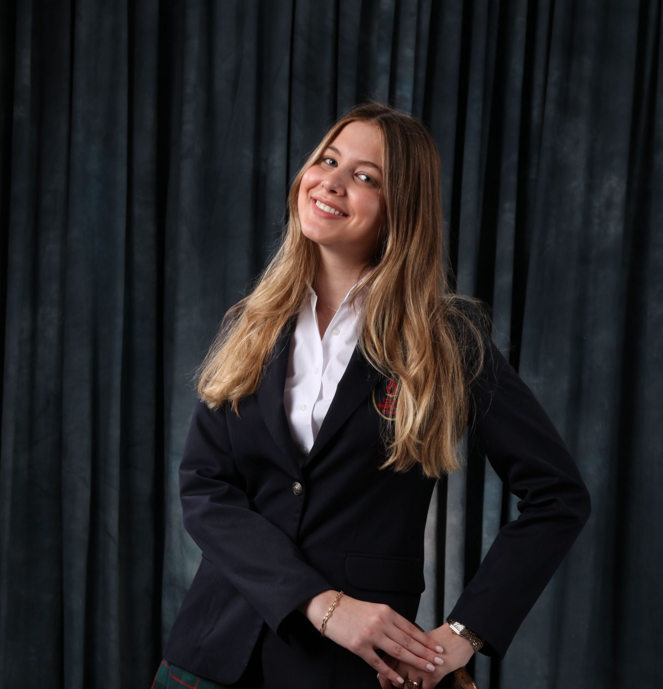
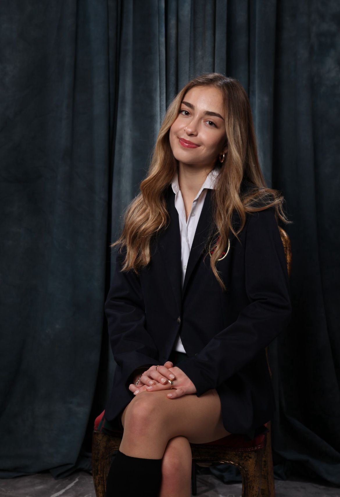
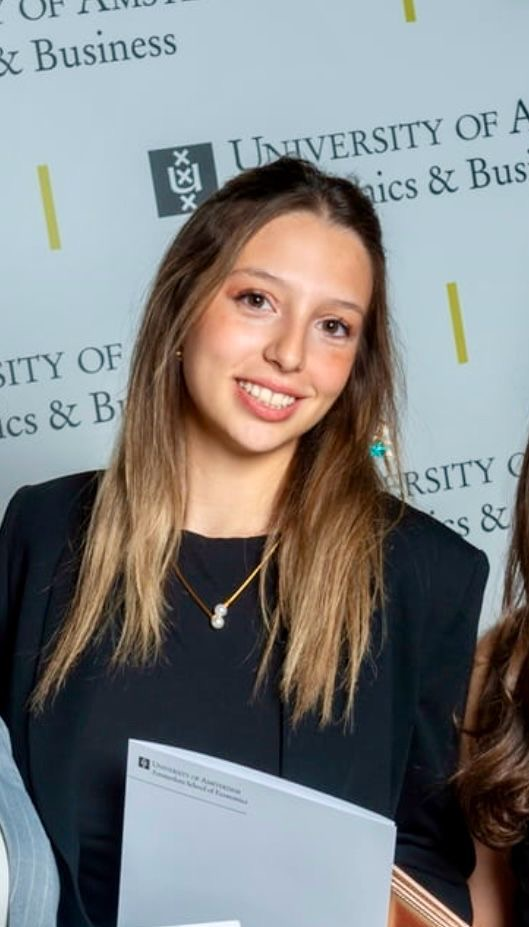

Academic Support Committee
Driving innovation and digital transformation through technology and technical support at ANKA.
Mission and Objectives
The Academic and Post-Acceptance Support Committee aims to guide students who are continuing or just beginning their studies in the Netherlands through both academic and orientation processes. The committee will operate in areas such as sharing academic materials, organizing career seminars, orientation programs, and mentorship with experienced students. In this way, it will support students' academic and social adaptation processes, helping them to have a successful educational journey.
Our Team

Ela Tanır
Chair

Defne Tuna
Vice Chair

Lara Eroğlu
Akademik ve Kabul Sonrası İletişim

Damla Alyeni
Üniversite/Akademik Destek Sorumlusu
Key Responsibilities
- Host seminars, webinars, and lectures with academic relevance
- Produce educational content and research-focused initiatives
- Foster academic collaboration among members and external institutions
- Support students in personal and intellectual development
- Promote critical thinking and interdisciplinary dialogue